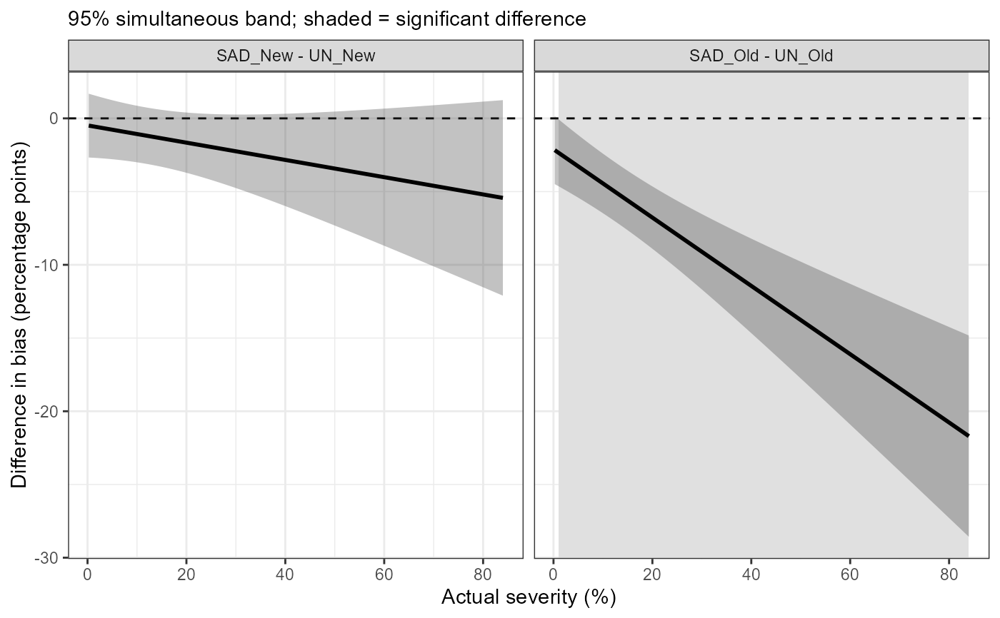

Bias, variance components and expected error along the severity range
Source:R/sad_model.R
sad_curve.RdFunctional part of the one-stage SAD validation. Describes, for each condition, how the bias, the variation among raters, the image variation, the residual variation and the expected absolute error change along the severity range, and compares the bias curves between conditions with simultaneous confidence bands, so that the severity ranges where a SAD helps or hurts are identified.
Usage
sad_curve(
fit,
type = c("linear", "smooth"),
reference = NULL,
pairs = NULL,
n = 100,
level = 0.95,
k = 5,
nsim = 5000,
seed = 1
)Arguments
- fit
An object returned by
sad_fit().- type
"linear"(default) uses the fittedsad_fitmodel, so bias is linear in severity within each condition."smooth"fits a functional generalised additive mixed model withmgcv::bam(): a smooth error curve per condition, a random smooth curve per rater and condition and a random image effect; bias can then take any shape.- reference
Reference for the differences: a condition (e.g.
"UN_Old") or a method (e.g."UN"). With a method, every other condition is compared with the reference method in the same group of raters. Defaults to the first condition.- pairs
Optional data frame with columns
aandb; differencesa - bare computed for each row. Overridesreference.- n
Number of grid points along the severity range.
- level
Confidence level of the bands.
- k
Basis dimension of the condition smooths (
type = "smooth").- nsim
Number of draws used for the simultaneous bands.
- seed
Random seed for the simultaneous bands. The user's random number stream is restored afterwards.
Value
An object of class sad_curve: a list with curves (one row per
condition and grid point; for "linear" also sd_rater, sd_image,
sd_resid, sd_total and expected_abs_error), differences (with
significant), type and level. For "smooth" also gam and edf.
Details
With type = "linear", the variance among raters at severity \(z\) is
\(\sigma^2_{b0} + 2z\sigma_{b0b1} + z^2\sigma^2_{b1}\), from the rater
intercept and slope covariance of the method. The total standard deviation
\(\sigma_T\) adds image, image x condition and residual variances, and the
expected absolute error is the mean of a folded normal distribution,
\(\sigma_T\sqrt{2/\pi}\exp(-b^2/2\sigma_T^2) + b(1 - 2\Phi(-b/\sigma_T))\),
where \(b\) is the bias. Differences are evaluated only where the severity
ranges of the two conditions overlap. Simultaneous bands use the
distribution of the maximum absolute t statistic over the grid, from draws
of the fixed effects.
Examples
# \donttest{
if (requireNamespace("glmmTMB", quietly = TRUE)) {
x <- sad_data(SADRustSoybean, wide = c(UN = "unaided", SAD = "aided"), group = "sad")
fit <- sad_fit(x)
cv <- sad_curve(fit, reference = "UN")
sad_regions(cv)
plot(cv, "difference")
}
#> Structure 'full' did not converge; trying the next one.
#> Structure 'noim' did not converge; trying the next one.

# }